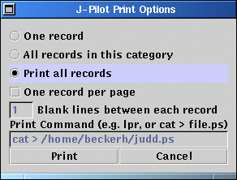

JPilot verfügt über ein nützliches Feature - Drucken. Dazu benutzt das Programm die Möglichkeit, Daten im Postscript-Format zu exportieren. Daher wird, wenn Sie aus JPilot heraus drucken wollen, ein Postscript-File erzeugt, welches Sie dann an die verschiedensten Tools leiten können.
Um zu drucken, klicken Sie auf File und dann auf Print. Dadurch öffnen Sie das Druck-Fenster.
In diesem Fenster können Sie zunächst wählen:
Weiterhin haben Sie dann die Möglichkeit, nur einen Eintrag pro Seiten zu drucken. Das ist zwar eine tierische Papierverschwendung, kann aber manchmal nützlich sein.
Anschließend können Sie die Anzahl der Leerzeilen zwischen den einzelnen Einträgen angeben.
In dem nun folgenden Feld Print Command können Sie
angeben, an welchen Befehl die zu exportierende Datei
geschickt werden soll. Behalten Sie dabei im Hinterkopf, daß
JPilot eine Postscriptdatei erzeugt. Um diese einfach und
direkt zu drucken, geben sie hier den Druckbefehl lpr
an. JPilot wird dann das Kommando lpr
Druckdatei.ps auswerfen, was dazu führt, daß die
Postscriptdatei gedruckt wird. Um die Datei aber auf die
Festplatte zu schreiben, benutzen Sie einfach das Kommando
cat zusammen mit einer Pipe und einem Ziel-File wie
in den Klammern gezeigt. Das wars schon.
Mit Print drucken sie, mit Cancel brechen Sie ab - aber das haben Sie auch schon erkannt!